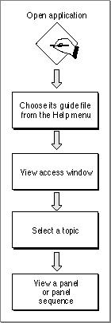
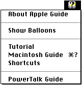
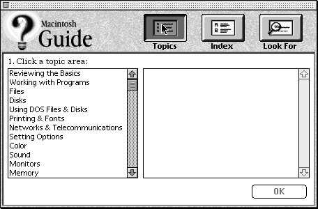
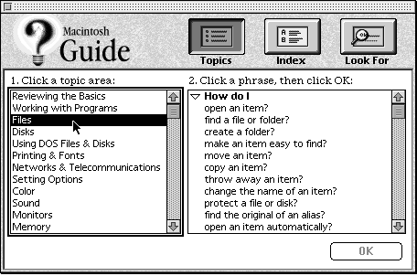
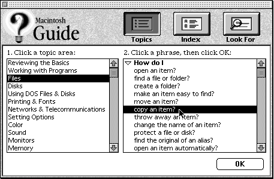
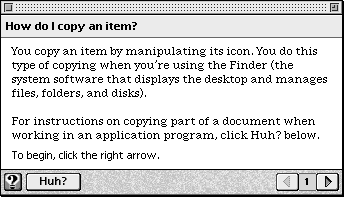

A Typical Apple Guide Session
Apple Guide is easy to use: in general, the user selects a guide file from the Help menu to invoke an access window that presents the guide file help topics. Typically, the user picks a topic from the access window and views the panels associated with it.Figure 1-5 shows the typical steps required to view help in Apple Guide.
Figure 1-5 The typical steps a user takes to view an Apple Guide topic

Guide file names appear in the Help menu, along with Balloon Help and any other help systems provided by your application. For example, Figure 1-6 shows a Help menu displaying Macintosh Guide and other guide files. (PowerTalk Guide, a guide file for PowerTalk, appears at the bottom of this menu.)
Figure 1-6 A Help menu displaying Macintosh Guide and other guide files

The user can invoke a guide file from the Help menu or from a keyboard shortcut you assign. Each time the user invokes a guide file from the Help menu, one of three access window types appears. For example, Figure 1-7 shows the Full Access window.
Figure 1-7 A Full Access window

One of these types, the Full Access screen (Figure 1-7) presents topics to the user through three buttons in the upper portion of the window. Each button provides different search features on the window to accommodate users' varying styles of conceptualizing and searching for information. In Figure 1-7, the Topics button is selected. Note that the left column of the Full Access window displays a list of broad topic categories (or topic areas) similar to a table of contents. When the user selects a topic area, a list of related topics appears in the right column of the screen. The associated topics are organized by headings such as "How do I". Figure 1-8 shows the user selecting the topic area "Files".
Figure 1-8 A Full Access Window with a topic area selected

Each topic is linked to a panel or sequence containing help information. To view the associated panels, the user selects the topic and presses the OK button in the lower portion of the window (or just double-clicks the topic). For example, Figure 1-9 shows the user selecting the topic "How do I copy an item?"
Figure 1-9 A Full Access Window with a topic area and topic selected

Once the user selects a topic, the related single panel (or first panel in a sequence) appears and the access window is hidden. Each panel typically displays one step in a procedure or one item of information. For instance, a panel can instruct the user to open a menu and select a command. Or it can describe a particular feature, such as an audio CD. Figure 1-10 shows the first panel of the topic "How do I copy an item?"
Figure 1-10 The first help panel for the selected topic

Notice that the lower bar of the panel (the navigation bar) contains navigation arrows on the lower-right side and that the lower-left side contains two buttons: GoStart (the lightbulb-shaped icon) and Huh? (the icon containing the word "Huh?"). In this example, the right navigation arrow is active to indicate that the user can click it to go to the next panel in the sequence. A dimmed right arrow indicates that the user has reached the end of the sequence. At the end of a sequence, the left arrow is generally activated, and the user can click it to go backward through the sequence.
To return to the access window, the user can click the GoStart button. This button should appear on all panels in your guide files and should always be active.
If the Huh? button is active, as in Figure 1-10, the user can click it to view another panel containing additional information.